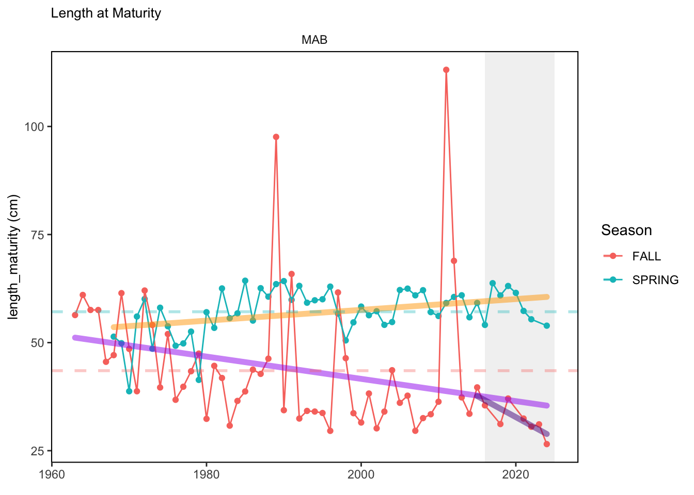
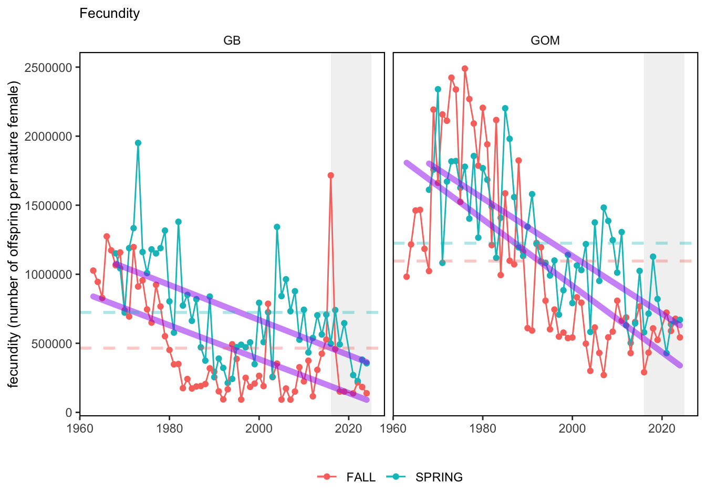
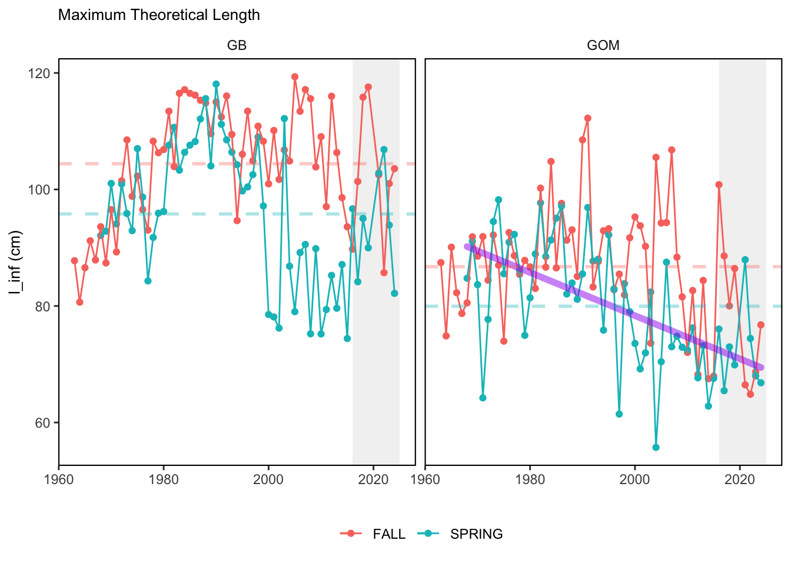

SMART Indicator Report: NE Shelf Functional Trait Indicators
2 Indicator name
NE Shelf Functional Trait Indicators
Includes variable(s): FALL-age_maturity, FALL-fecundity, FALL-k, FALL-l_inf, FALL-length_maturity, FALL-max_obs_length, FALL-offspring_size, FALL-PC1, FALL-PC2, FALL-PC3, FALL-trophic_level, SPRING-age_maturity, SPRING-fecundity, SPRING-k, SPRING-l_inf, SPRING-length_maturity, SPRING-max_obs_length, SPRING-offspring_size, SPRING-PC1, SPRING-PC2, SPRING-PC3, SPRING-trophic_level
3 Indicator brief description
These data represent estimates of trait distributions for key functional traits amongst finfish species at each EPU on the Northeast Continental Shelf.
4 Indicator visualization
SOE_Submission_results.docx I’m happy to share the code used to produce these figures from the data linked above.

5 Indicator documentation
5.1 Are indicators available for others to use (data downloadable)?
Yes
5.1.1 Where can indicators be found?
Data: https://noaa-edab.github.io/ecodata/index.html
Description: https://noaa-edab.github.io/catalog/finfish_traits.html
Technical documentation: https://noaa-edab.github.io/tech-doc/finfish_traits.html
5.1.2 How often are they updated? Are future updates likely?
[need sequential look at datasets for update frequency. Future requires judgement]
5.1.3 Who is the contact?
Bart DiFiore (bdifiore@gmri.org)
5.2 Gather indicator statistics
5.2.1 Units
Indicator | Units |
|---|---|
FALL-age_maturity | years |
FALL-fecundity | number of offspring per mature female |
FALL-k | 1/years |
FALL-l_inf | cm |
FALL-length_maturity | cm |
FALL-max_obs_length | cm |
FALL-offspring_size | mm |
FALL-PC1 | unitless |
FALL-PC2 | unitless |
FALL-PC3 | unitless |
FALL-trophic_level | unitless |
SPRING-age_maturity | years |
SPRING-fecundity | number of offspring per mature female |
SPRING-k | 1/years |
SPRING-l_inf | cm |
SPRING-length_maturity | cm |
SPRING-max_obs_length | cm |
SPRING-offspring_size | mm |
SPRING-PC1 | unitless |
SPRING-PC2 | unitless |
SPRING-PC3 | unitless |
SPRING-trophic_level | unitless |
5.2.2 Length of time series, start and end date, periodicity
General overview: 1963-2023, Spring (January-June) & Fall (July-December)
Indicator specifics:
Indicator | EPU | StartYear | EndYear | NumYears | MissingYears |
|---|---|---|---|---|---|
FALL-age_maturity | GB | 1963 | 2024 | 61 | 1 |
FALL-age_maturity | GOM | 1963 | 2024 | 61 | 1 |
FALL-age_maturity | MAB | 1963 | 2024 | 60 | 2 |
FALL-age_maturity | NEshelf | 1963 | 2024 | 61 | 1 |
FALL-age_maturity | SS | 1963 | 2024 | 61 | 1 |
FALL-fecundity | GB | 1963 | 2024 | 61 | 1 |
FALL-fecundity | GOM | 1963 | 2024 | 61 | 1 |
FALL-fecundity | MAB | 1963 | 2024 | 60 | 2 |
FALL-fecundity | NEshelf | 1963 | 2024 | 61 | 1 |
FALL-fecundity | SS | 1963 | 2024 | 61 | 1 |
FALL-k | GB | 1963 | 2024 | 61 | 1 |
FALL-k | GOM | 1963 | 2024 | 61 | 1 |
FALL-k | MAB | 1963 | 2024 | 60 | 2 |
FALL-k | NEshelf | 1963 | 2024 | 61 | 1 |
FALL-k | SS | 1963 | 2024 | 61 | 1 |
FALL-l_inf | GB | 1963 | 2024 | 61 | 1 |
FALL-l_inf | GOM | 1963 | 2024 | 61 | 1 |
FALL-l_inf | MAB | 1963 | 2024 | 60 | 2 |
FALL-l_inf | NEshelf | 1963 | 2024 | 61 | 1 |
FALL-l_inf | SS | 1963 | 2024 | 61 | 1 |
FALL-length_maturity | GB | 1963 | 2024 | 61 | 1 |
FALL-length_maturity | GOM | 1963 | 2024 | 61 | 1 |
FALL-length_maturity | MAB | 1963 | 2024 | 60 | 2 |
FALL-length_maturity | NEshelf | 1963 | 2024 | 61 | 1 |
FALL-length_maturity | SS | 1963 | 2024 | 61 | 1 |
FALL-max_obs_length | GB | 1963 | 2024 | 61 | 1 |
FALL-max_obs_length | GOM | 1963 | 2024 | 61 | 1 |
FALL-max_obs_length | MAB | 1963 | 2024 | 60 | 2 |
FALL-max_obs_length | NEshelf | 1963 | 2024 | 61 | 1 |
FALL-max_obs_length | SS | 1963 | 2024 | 61 | 1 |
FALL-offspring_size | GB | 1963 | 2024 | 61 | 1 |
FALL-offspring_size | GOM | 1963 | 2024 | 61 | 1 |
FALL-offspring_size | MAB | 1963 | 2024 | 60 | 2 |
FALL-offspring_size | NEshelf | 1963 | 2024 | 61 | 1 |
FALL-offspring_size | SS | 1963 | 2024 | 61 | 1 |
FALL-PC1 | GB | 1963 | 2024 | 61 | 1 |
FALL-PC1 | GOM | 1963 | 2024 | 61 | 1 |
FALL-PC1 | MAB | 1963 | 2024 | 60 | 2 |
FALL-PC1 | NEshelf | 1963 | 2024 | 61 | 1 |
FALL-PC1 | SS | 1963 | 2024 | 61 | 1 |
FALL-PC2 | GB | 1963 | 2024 | 61 | 1 |
FALL-PC2 | GOM | 1963 | 2024 | 61 | 1 |
FALL-PC2 | MAB | 1963 | 2024 | 60 | 2 |
FALL-PC2 | NEshelf | 1963 | 2024 | 61 | 1 |
FALL-PC2 | SS | 1963 | 2024 | 61 | 1 |
FALL-PC3 | GB | 1963 | 2024 | 61 | 1 |
FALL-PC3 | GOM | 1963 | 2024 | 61 | 1 |
FALL-PC3 | MAB | 1963 | 2024 | 60 | 2 |
FALL-PC3 | NEshelf | 1963 | 2024 | 61 | 1 |
FALL-PC3 | SS | 1963 | 2024 | 61 | 1 |
FALL-trophic_level | GB | 1963 | 2024 | 61 | 1 |
FALL-trophic_level | GOM | 1963 | 2024 | 61 | 1 |
FALL-trophic_level | MAB | 1963 | 2024 | 60 | 2 |
FALL-trophic_level | NEshelf | 1963 | 2024 | 61 | 1 |
FALL-trophic_level | SS | 1963 | 2024 | 61 | 1 |
SPRING-age_maturity | GB | 1968 | 2024 | 56 | 1 |
SPRING-age_maturity | GOM | 1968 | 2024 | 56 | 1 |
SPRING-age_maturity | MAB | 1968 | 2024 | 56 | 1 |
SPRING-age_maturity | NEshelf | 1968 | 2024 | 57 | 0 |
SPRING-age_maturity | SS | 1968 | 2024 | 56 | 1 |
SPRING-fecundity | GB | 1968 | 2024 | 56 | 1 |
SPRING-fecundity | GOM | 1968 | 2024 | 56 | 1 |
SPRING-fecundity | MAB | 1968 | 2024 | 56 | 1 |
SPRING-fecundity | NEshelf | 1968 | 2024 | 57 | 0 |
SPRING-fecundity | SS | 1968 | 2024 | 56 | 1 |
SPRING-k | GB | 1968 | 2024 | 56 | 1 |
SPRING-k | GOM | 1968 | 2024 | 56 | 1 |
SPRING-k | MAB | 1968 | 2024 | 56 | 1 |
SPRING-k | NEshelf | 1968 | 2024 | 57 | 0 |
SPRING-k | SS | 1968 | 2024 | 56 | 1 |
SPRING-l_inf | GB | 1968 | 2024 | 56 | 1 |
SPRING-l_inf | GOM | 1968 | 2024 | 56 | 1 |
SPRING-l_inf | MAB | 1968 | 2024 | 56 | 1 |
SPRING-l_inf | NEshelf | 1968 | 2024 | 57 | 0 |
SPRING-l_inf | SS | 1968 | 2024 | 56 | 1 |
SPRING-length_maturity | GB | 1968 | 2024 | 56 | 1 |
SPRING-length_maturity | GOM | 1968 | 2024 | 56 | 1 |
SPRING-length_maturity | MAB | 1968 | 2024 | 56 | 1 |
SPRING-length_maturity | NEshelf | 1968 | 2024 | 57 | 0 |
SPRING-length_maturity | SS | 1968 | 2024 | 56 | 1 |
SPRING-max_obs_length | GB | 1968 | 2024 | 56 | 1 |
SPRING-max_obs_length | GOM | 1968 | 2024 | 56 | 1 |
SPRING-max_obs_length | MAB | 1968 | 2024 | 56 | 1 |
SPRING-max_obs_length | NEshelf | 1968 | 2024 | 57 | 0 |
SPRING-max_obs_length | SS | 1968 | 2024 | 56 | 1 |
SPRING-offspring_size | GB | 1968 | 2024 | 56 | 1 |
SPRING-offspring_size | GOM | 1968 | 2024 | 56 | 1 |
SPRING-offspring_size | MAB | 1968 | 2024 | 56 | 1 |
SPRING-offspring_size | NEshelf | 1968 | 2024 | 57 | 0 |
SPRING-offspring_size | SS | 1968 | 2024 | 56 | 1 |
SPRING-PC1 | GB | 1968 | 2024 | 56 | 1 |
SPRING-PC1 | GOM | 1968 | 2024 | 56 | 1 |
SPRING-PC1 | MAB | 1968 | 2024 | 56 | 1 |
SPRING-PC1 | NEshelf | 1968 | 2024 | 57 | 0 |
SPRING-PC1 | SS | 1968 | 2024 | 56 | 1 |
SPRING-PC2 | GB | 1968 | 2024 | 56 | 1 |
SPRING-PC2 | GOM | 1968 | 2024 | 56 | 1 |
SPRING-PC2 | MAB | 1968 | 2024 | 56 | 1 |
SPRING-PC2 | NEshelf | 1968 | 2024 | 57 | 0 |
SPRING-PC2 | SS | 1968 | 2024 | 56 | 1 |
SPRING-PC3 | GB | 1968 | 2024 | 56 | 1 |
SPRING-PC3 | GOM | 1968 | 2024 | 56 | 1 |
SPRING-PC3 | MAB | 1968 | 2024 | 56 | 1 |
SPRING-PC3 | NEshelf | 1968 | 2024 | 57 | 0 |
SPRING-PC3 | SS | 1968 | 2024 | 56 | 1 |
SPRING-trophic_level | GB | 1968 | 2024 | 56 | 1 |
SPRING-trophic_level | GOM | 1968 | 2024 | 56 | 1 |
SPRING-trophic_level | MAB | 1968 | 2024 | 56 | 1 |
SPRING-trophic_level | NEshelf | 1968 | 2024 | 57 | 0 |
SPRING-trophic_level | SS | 1968 | 2024 | 56 | 1 |
5.2.3 Spatial location, scale and extent
General overview: By EPU and full shelf
Indicator specifics:
Indicator | EPU |
|---|---|
FALL-age_maturity | GB |
FALL-age_maturity | GOM |
FALL-age_maturity | MAB |
FALL-age_maturity | NEshelf |
FALL-age_maturity | SS |
FALL-fecundity | GB |
FALL-fecundity | GOM |
FALL-fecundity | MAB |
FALL-fecundity | NEshelf |
FALL-fecundity | SS |
FALL-k | GB |
FALL-k | GOM |
FALL-k | MAB |
FALL-k | NEshelf |
FALL-k | SS |
FALL-l_inf | GB |
FALL-l_inf | GOM |
FALL-l_inf | MAB |
FALL-l_inf | NEshelf |
FALL-l_inf | SS |
FALL-length_maturity | GB |
FALL-length_maturity | GOM |
FALL-length_maturity | MAB |
FALL-length_maturity | NEshelf |
FALL-length_maturity | SS |
FALL-max_obs_length | GB |
FALL-max_obs_length | GOM |
FALL-max_obs_length | MAB |
FALL-max_obs_length | NEshelf |
FALL-max_obs_length | SS |
FALL-offspring_size | GB |
FALL-offspring_size | GOM |
FALL-offspring_size | MAB |
FALL-offspring_size | NEshelf |
FALL-offspring_size | SS |
FALL-PC1 | GB |
FALL-PC1 | GOM |
FALL-PC1 | MAB |
FALL-PC1 | NEshelf |
FALL-PC1 | SS |
FALL-PC2 | GB |
FALL-PC2 | GOM |
FALL-PC2 | MAB |
FALL-PC2 | NEshelf |
FALL-PC2 | SS |
FALL-PC3 | GB |
FALL-PC3 | GOM |
FALL-PC3 | MAB |
FALL-PC3 | NEshelf |
FALL-PC3 | SS |
FALL-trophic_level | GB |
FALL-trophic_level | GOM |
FALL-trophic_level | MAB |
FALL-trophic_level | NEshelf |
FALL-trophic_level | SS |
SPRING-age_maturity | GB |
SPRING-age_maturity | GOM |
SPRING-age_maturity | MAB |
SPRING-age_maturity | NEshelf |
SPRING-age_maturity | SS |
SPRING-fecundity | GB |
SPRING-fecundity | GOM |
SPRING-fecundity | MAB |
SPRING-fecundity | NEshelf |
SPRING-fecundity | SS |
SPRING-k | GB |
SPRING-k | GOM |
SPRING-k | MAB |
SPRING-k | NEshelf |
SPRING-k | SS |
SPRING-l_inf | GB |
SPRING-l_inf | GOM |
SPRING-l_inf | MAB |
SPRING-l_inf | NEshelf |
SPRING-l_inf | SS |
SPRING-length_maturity | GB |
SPRING-length_maturity | GOM |
SPRING-length_maturity | MAB |
SPRING-length_maturity | NEshelf |
SPRING-length_maturity | SS |
SPRING-max_obs_length | GB |
SPRING-max_obs_length | GOM |
SPRING-max_obs_length | MAB |
SPRING-max_obs_length | NEshelf |
SPRING-max_obs_length | SS |
SPRING-offspring_size | GB |
SPRING-offspring_size | GOM |
SPRING-offspring_size | MAB |
SPRING-offspring_size | NEshelf |
SPRING-offspring_size | SS |
SPRING-PC1 | GB |
SPRING-PC1 | GOM |
SPRING-PC1 | MAB |
SPRING-PC1 | NEshelf |
SPRING-PC1 | SS |
SPRING-PC2 | GB |
SPRING-PC2 | GOM |
SPRING-PC2 | MAB |
SPRING-PC2 | NEshelf |
SPRING-PC2 | SS |
SPRING-PC3 | GB |
SPRING-PC3 | GOM |
SPRING-PC3 | MAB |
SPRING-PC3 | NEshelf |
SPRING-PC3 | SS |
SPRING-trophic_level | GB |
SPRING-trophic_level | GOM |
SPRING-trophic_level | MAB |
SPRING-trophic_level | NEshelf |
SPRING-trophic_level | SS |
5.3 Are methods clearly documented to obtain source data and calculate indicators?
Yes
5.3.1 Can the indicator be calculated from current documentation?
Here, we present indices for 8 functional traits and three aggregate trait ordinations. To better understand the long-term linear change in these indicators, we fit linear mixed effects models. Specifically, at the EPU scale we estimated the linear change in the response (e.g. PCA1, PCA2, or PCA3) with time in each season in each EPU . We include year as a random intercept effect to account for systematic annual variation across EPU’s. For visualization purposes we include the long-term linear trend if the 95% confidence intervals on the slope estimate do not include zero. Principal Component Analysis of traits Many traits represent similar variation in the community. For instance, maximum observed body size and asymptotic body size (from the VB growth equation) both represent similar trait indices. To further reduce the dimensionality across traits, we conducted a principal component analysis (PCA) of the trait database. The first principal component (PCA1) explained 61.5% of the variation, while the second component (PCA2) explained 19.6% of the variation. Traits such as VB growth parameter k, length at maturity, age at maturity, maximum observed length, and VB growth parameter linf all loaded strongly on PCA1. Following, McKeon et al. (2024) we consider this PCA axis as an indicator for finfish “Pace of Life”, with higher values on this axis representing faster growth and small maximum body size. Similarly, we consider the second axis as an indicator of “Fecundity”, with higher values on the axis reflecting lower reproductive investment (smaller offspring, higher fecundity). Estimating trait distributions To generate a functional trait index, we then combined our trait database with observations of the finfish community using a community weighted mean (CWM) approach (e.g. Lavorel et al. (2008), Frainer et al. (2017)). Specifically, we follow Lavorel et al. (2008), and estimate the CWM for each trait j as \[CWM_j = \frac{\sum_{i=1}^nb_it_{ij}}{\sum_{i=1}^nb_i}\] where \(b_i\) is the biomass (kg) of species \(i\), \(t_{ij}\) is the value of trait \(j\) for species \(i\), and \(n\) is the total number of species captured. The units of \(CWM_j\) depend on the trait value. For instance, the units of the CWM length at maturity are cm. The community weighted mean can be estimated at different spatial or temporal scales. Here we estimate the CWM for each trait at the scale of the NE Shelf, where bi is the biomass (kg) of species i captured across all tows in a year and season, or similarly at the EPU scale, where bi is the biomass (kg) of species i captured across each EPU in each year and season. All other data preparation and processing is standard to the trawl survey data prep, including species-specific vessel corrections, etc.
5.4 Are indicator underlying source data linked or easy to find?
Source data are publicly available.
5.4.1 Where are source data stored?
Currently, the version of the NEFSC Trawl Survey used to generate the community weighted mean trait values is from https://github.com/NOAA-EDAB/data-requests/tree/main/EwE-menhaden-AndreBuchheister. However, any version of the trawl survey data that has corrected estimates of biomass by species at the tow scale could be used to update/recreate the index. The trait values for each species can be found at https://github.com/bartdifiore/Fish-Functional-Traits/blob/main/Data/Derived/trait_database.csv and the PCA ordinations of these traits can be found at https://github.com/bartdifiore/Fish-Functional-Traits/blob/main/Data/Derived/pca_variables.csv. I have included in this submission the derived CWM trait database that can be directly used to create all figures etc. Development of the Trait Database To develop the trait database we utilized two primary sources: Beukhof et al. (2019) and James T. Thorson et al. (2023) FishLife database. Both data sources are based on FishBase (Froese and Pauly 2019), however provide different levels of detail. Specifically, we queried the Beukhof et al. (2019) database for finfish species encountered in the NE Shelf trawl survey. We utilized values from Beukhof et al. (2019) that were species-specific (e.g. not estimated based on averages of traits across other species of the same genus, family, class, order). For remaining species encountered on the NE Shelf, we queried the FishLife database. The FishLife database used a modeling approach to impute trait values for all fish species in FishBase based on taxonomic relatedness. Thus, if a trait for a particular species was unknown, the model generated a prediction for that trait based on taxonomic relatedness via a structural equation model.
5.4.2 How/by whom are source data updated? Are future updates likely?
Bart DiFiore bdifiore@gmri.org
[likelihood of source data updates requires judgement, enter by hand]
6 Indicator analysis/testing or history of use
6.1 What decision or advice processes are the indicators currently used in?
Functional traits, such as length at maturity, asymptotic body size, or fecundity, offer a means to synthesize change across complex, diverse communities while avoiding the pitfalls of examining change in any given species. In general, ecological theory predicts that if many species play similar roles in an ecosystem, known as high functional redundancy, then the loss of any one species will be compensated by the prevalence of functionally similar species, allowing for greater stability and resilience at the ecosystem level. Therefore, monitoring changes in functional trait distributions can provide a means of assessing ecosystem-scale resilience. Here, we compiled eight key functional traits and three aggregate trait ordinations for ~388 finfish species encountered in the NEFSC trawl survey. We then estimated the prevalence of each trait for each season, year, and EPU, using a community-weighed mean approach. Finally, we used regression-based approaches to explore long-term temporal shifts in functional trait distributions.
6.2 What implications of the indicators are currently listed?
In general, there appears to be equivocal evidence for functional redundancy in traits at both the scale of the NE Shelf and within particular EPU’s. For instance, for trait ordination axes related to the pace of life and fecundity, there was stability in trait distributions for species captured during the fall survey. However, in the spring survey there was evidence for long-term shifts towards slower life history strategies (larger body size, lower fecundity, fewer offspring). At the EPU scale, there was little evidence for long-term linear trends in trait distributions in the Gulf of Maine and Scotian Shelf finfish communities, suggesting a high level of functional redundancy and stability in the face of dramatic shifts in oceanographic conditions (e.g. increasing temperatures) and other anthropogenic impacts. Conversely, there was evidence for long term change in trait distributions in the mid-Atlantic Bight and Georges Bank. For instance, the fall finfish community on George’s Bank and the spring finfish community in the mid-Atlantic Bight are both showing long-term shifts towards slower life history strategies with lower fecundity. These changes suggest that more research across the finfish community in these regions is needed to understand the ecological and economic ramifications of such change.
6.3 Do target, limit, or threshold values already exist for the indicator?
[Fill by hand; if not in key results or implications, likely does not exist]
6.4 Have the indicators been tested to ensure they respond proportionally to a change in the underlying process?
[Fill by hand; if not in introduction, key results, or implications, likely not tested]
7 Comments
[Fill below by hand once above data complete]
7.1 Additional potential links to management in addition to uses listed above
7.2 What additional work would be needed for the Council to use the indicator?
7.3 What issues are caused if there is a gap or delay in data underlying the indicator